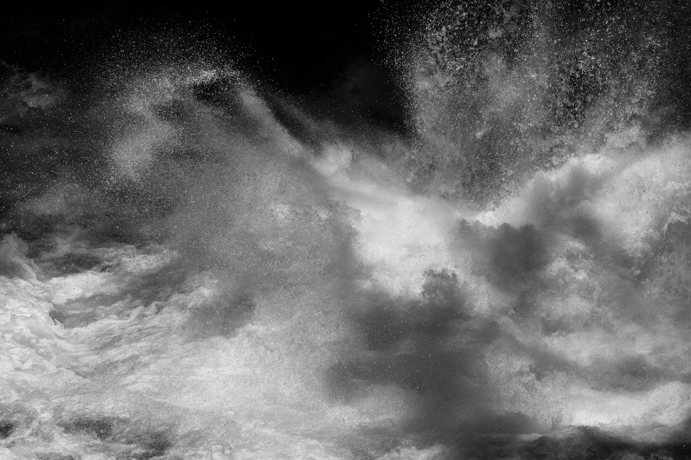
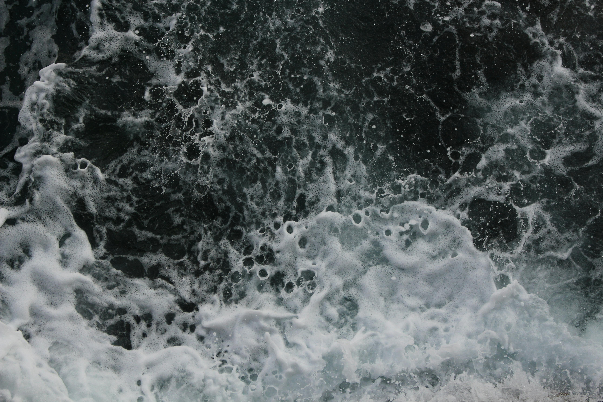
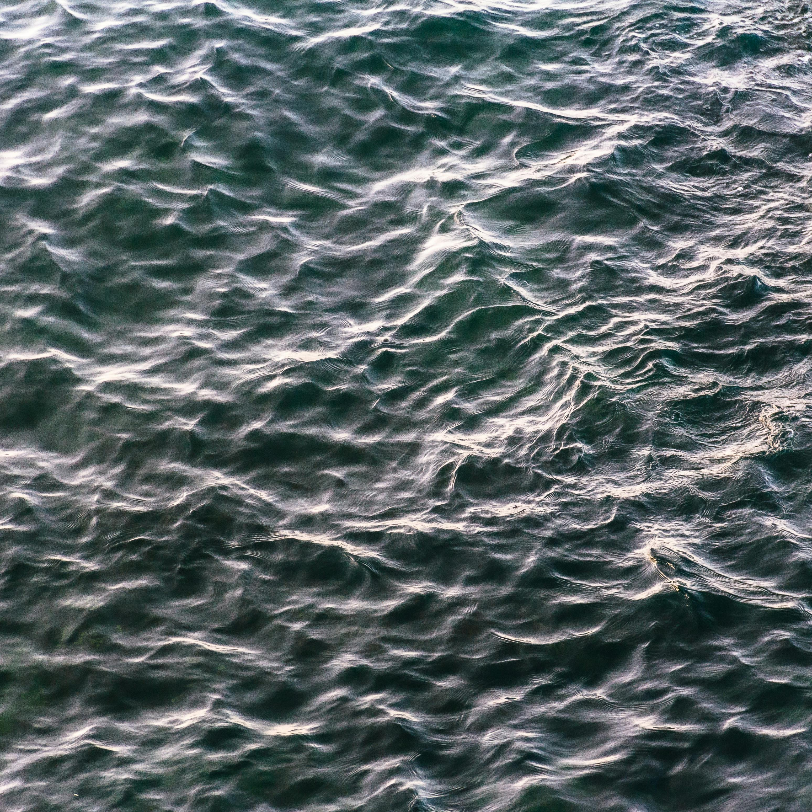
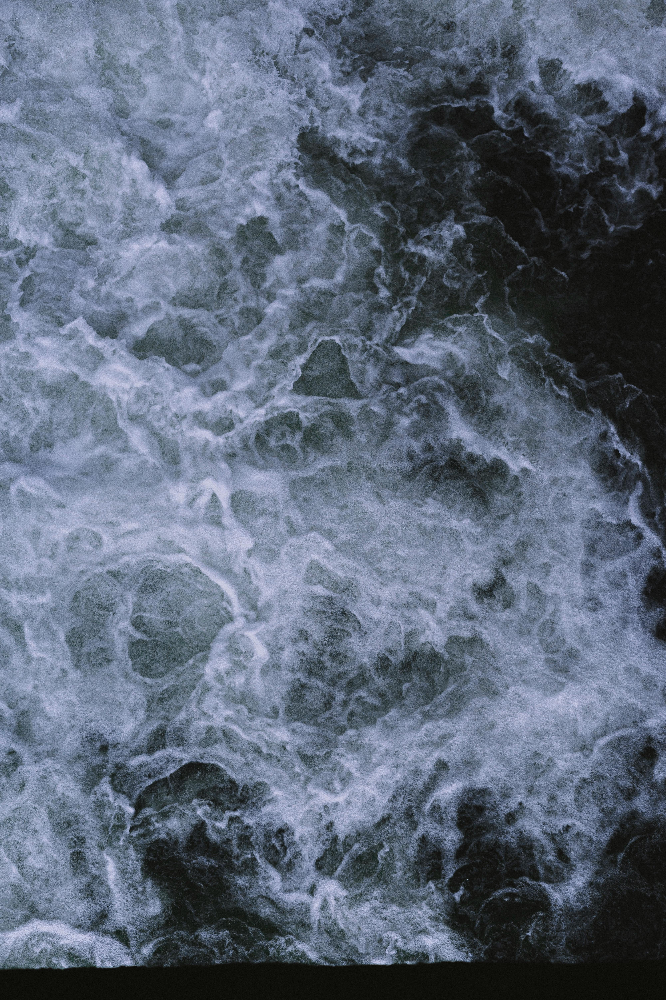

The 2026 DSU Singer/Songwriter Studio has been composing a song called Lost In Time and our task today is to create several album cover concepts for this new song.
You'll find the text that must be included on the cover, the full lyrics for your reference, some starter images you may want to use, and some links to other places where you may find other resources.




Lost in Time
[Verse 1]
What does this all mean?
Floating in space, just a speck
Trying to find my place
Is anything what it seems?
Crumbling tower falling into the sea
In distress, I'm such a wreck
[Chorus 1]
Counting the grains of sand
Trapped in this hourglass
Seconds keep ticking past
Will I ever start the right path?
[Verse 2]
Have I become numb to this routine?
Floating on the waves of my reality
Dissolving into the currents
What will become of me?
Feel the necrosis setting in
Rotting away indefinitely
[Chorus 2]
Counting the grains of sand
Trapped in this hourglass
Minutes keep drifting away
Will I ever start the right path?
Will I ever start the right path?
[verse 3]
Breaking out of my own skin
Waves crashing all around
Wish I could escape this madness
Can I truly be myself?
Waste away or continued chaos
I guess that's up to me
[chorus 3]
Counting the grains of sand
Trapped in this hourglass
Hours rushing past
Will I ever start the right path?
Will I ever find the right path?
Did I choose the right path?